88 images
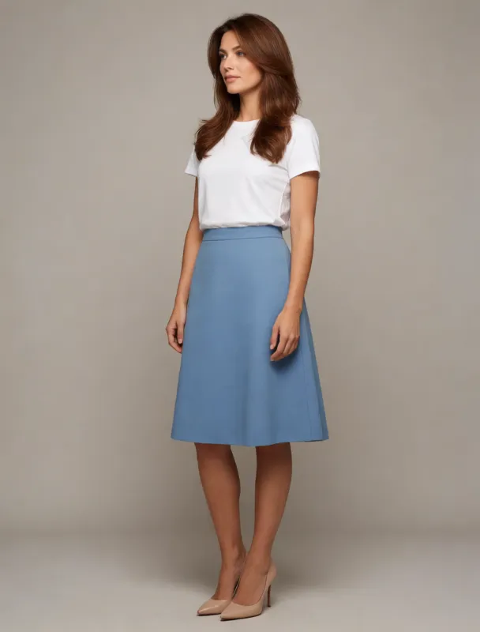
krea 2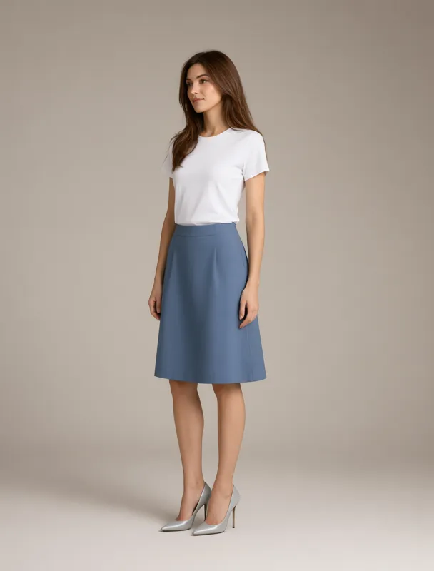
qwen image 2.1a full color full length fashion photograph in three-quarter view, with the whole body in frame from head to feet, lit by soft even studio light against a plain warm gray backdrop. the subject is a slim mixed race woman of about twenty five with light skin. her hair is chestnut brown, long blowout layers. she wears a plain white crew-neck t-shirt tucked in. she wears a plain dusty blue knee-length a-line skirt. she wears stiletto pumps. she stands relaxed, turned three quarters toward the left side of the frame, and gazes off to the left side of the frame, away from the camera.
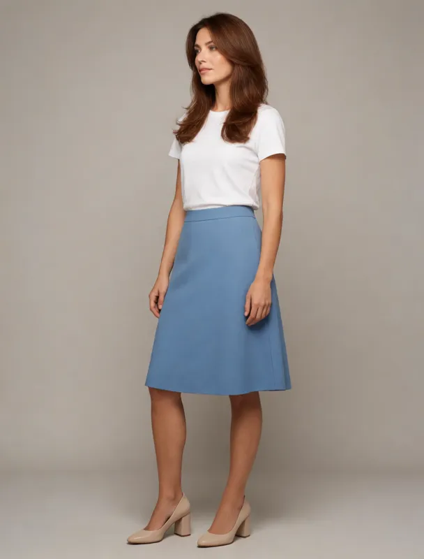
krea 2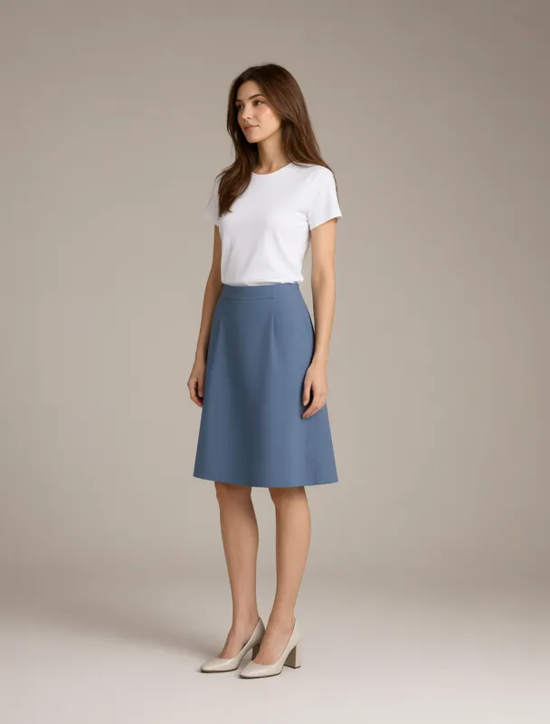
qwen image 2.1a full color full length fashion photograph in three-quarter view, with the whole body in frame from head to feet, lit by soft even studio light against a plain warm gray backdrop. the subject is a slim mixed race woman of about twenty five with light skin. her hair is chestnut brown, long blowout layers. she wears a plain white crew-neck t-shirt tucked in. she wears a plain dusty blue knee-length a-line skirt. she wears block heel pumps. she stands relaxed, turned three quarters toward the left side of the frame, and gazes off to the left side of the frame, away from the camera.
a full color full length fashion photograph in three-quarter view, with the whole body in frame from head to feet, lit by soft even studio light against a plain warm gray backdrop. the subject is a slim mixed race woman of about twenty five with light skin. her hair is chestnut brown, long blowout layers. she wears a plain white crew-neck t-shirt tucked in. she wears a plain dusty blue knee-length a-line skirt. she wears kitten heels. she stands relaxed, turned three quarters toward the left side of the frame, and gazes off to the left side of the frame, away from the camera.
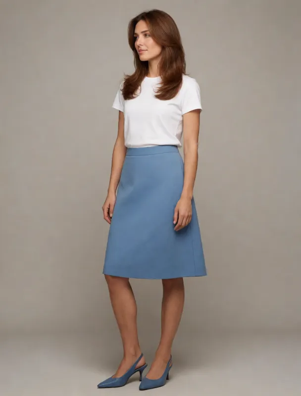
krea 2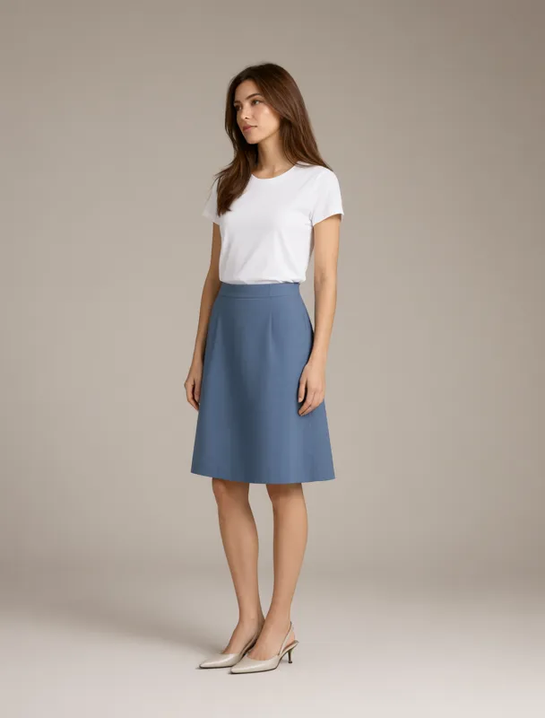
qwen image 2.1a full color full length fashion photograph in three-quarter view, with the whole body in frame from head to feet, lit by soft even studio light against a plain warm gray backdrop. the subject is a slim mixed race woman of about twenty five with light skin. her hair is chestnut brown, long blowout layers. she wears a plain white crew-neck t-shirt tucked in. she wears a plain dusty blue knee-length a-line skirt. she wears slingback heels. she stands relaxed, turned three quarters toward the left side of the frame, and gazes off to the left side of the frame, away from the camera.
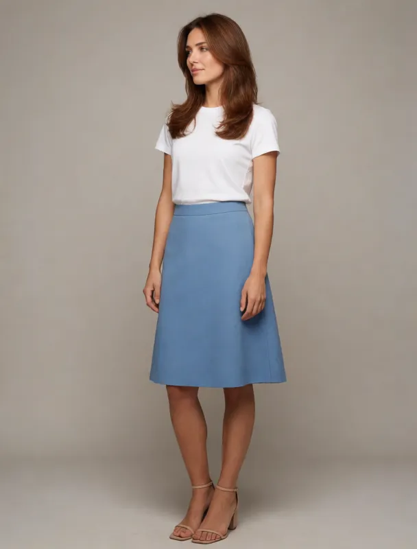
krea 2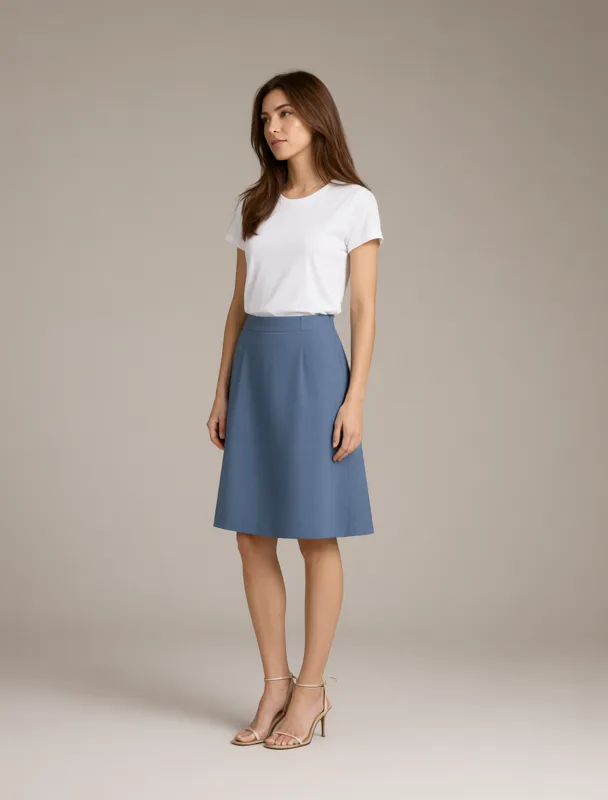
qwen image 2.1a full color full length fashion photograph in three-quarter view, with the whole body in frame from head to feet, lit by soft even studio light against a plain warm gray backdrop. the subject is a slim mixed race woman of about twenty five with light skin. her hair is chestnut brown, long blowout layers. she wears a plain white crew-neck t-shirt tucked in. she wears a plain dusty blue knee-length a-line skirt. she wears strappy heeled sandals. she stands relaxed, turned three quarters toward the left side of the frame, and gazes off to the left side of the frame, away from the camera.
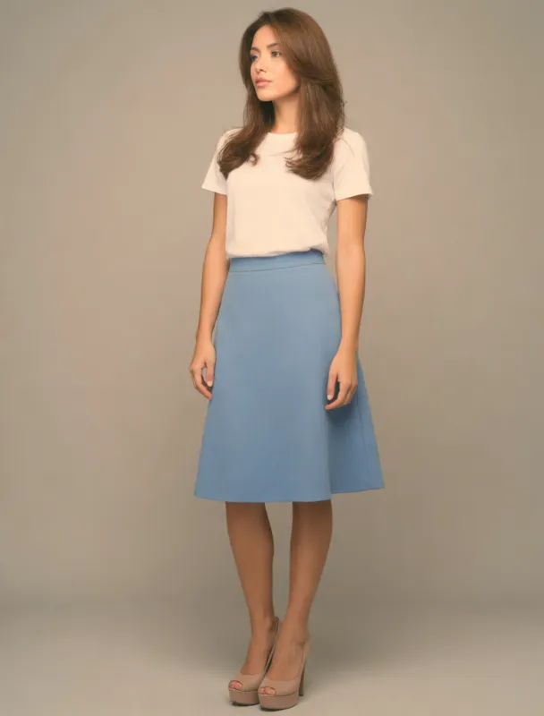
krea 2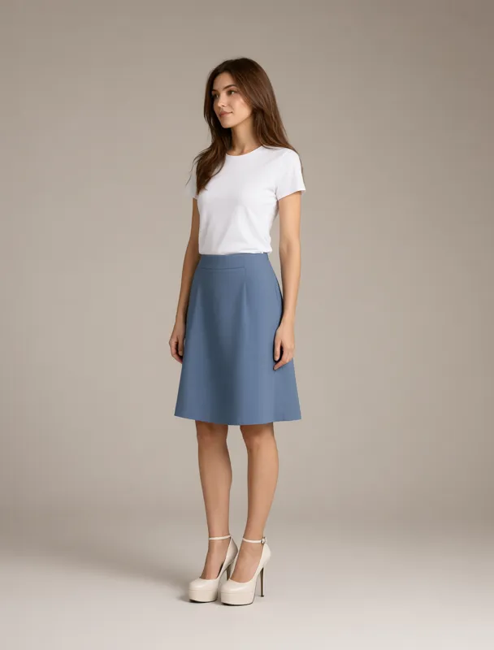
qwen image 2.1a full color full length fashion photograph in three-quarter view, with the whole body in frame from head to feet, lit by soft even studio light against a plain warm gray backdrop. the subject is a slim mixed race woman of about twenty five with light skin. her hair is chestnut brown, long blowout layers. she wears a plain white crew-neck t-shirt tucked in. she wears a plain dusty blue knee-length a-line skirt. she wears platform heels. she stands relaxed, turned three quarters toward the left side of the frame, and gazes off to the left side of the frame, away from the camera.
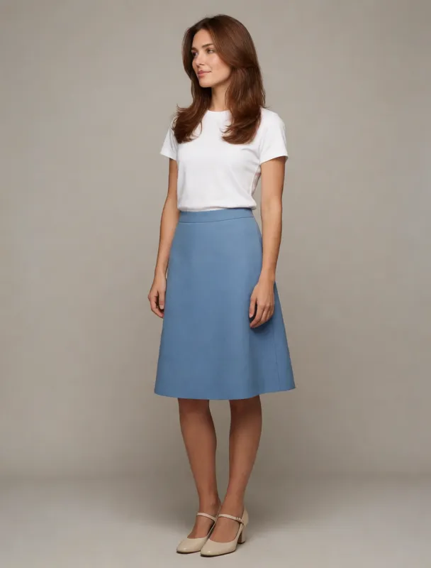
krea 2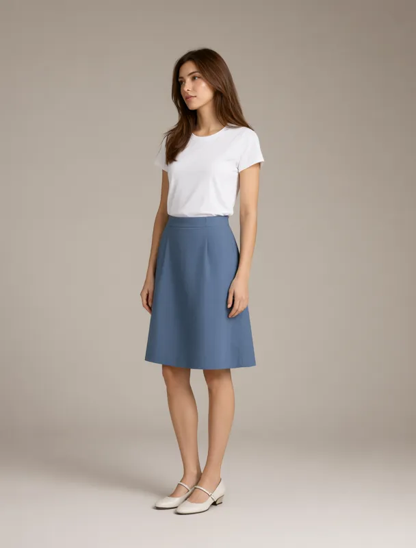
qwen image 2.1a full color full length fashion photograph in three-quarter view, with the whole body in frame from head to feet, lit by soft even studio light against a plain warm gray backdrop. the subject is a slim mixed race woman of about twenty five with light skin. her hair is chestnut brown, long blowout layers. she wears a plain white crew-neck t-shirt tucked in. she wears a plain dusty blue knee-length a-line skirt. she wears mary jane heels. she stands relaxed, turned three quarters toward the left side of the frame, and gazes off to the left side of the frame, away from the camera.
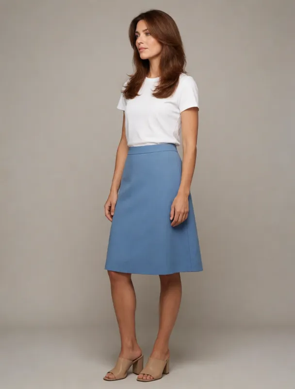
krea 2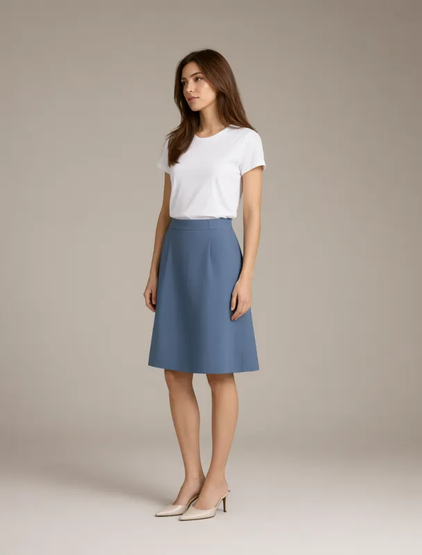
qwen image 2.1a full color full length fashion photograph in three-quarter view, with the whole body in frame from head to feet, lit by soft even studio light against a plain warm gray backdrop. the subject is a slim mixed race woman of about twenty five with light skin. her hair is chestnut brown, long blowout layers. she wears a plain white crew-neck t-shirt tucked in. she wears a plain dusty blue knee-length a-line skirt. she wears heeled mules. she stands relaxed, turned three quarters toward the left side of the frame, and gazes off to the left side of the frame, away from the camera.
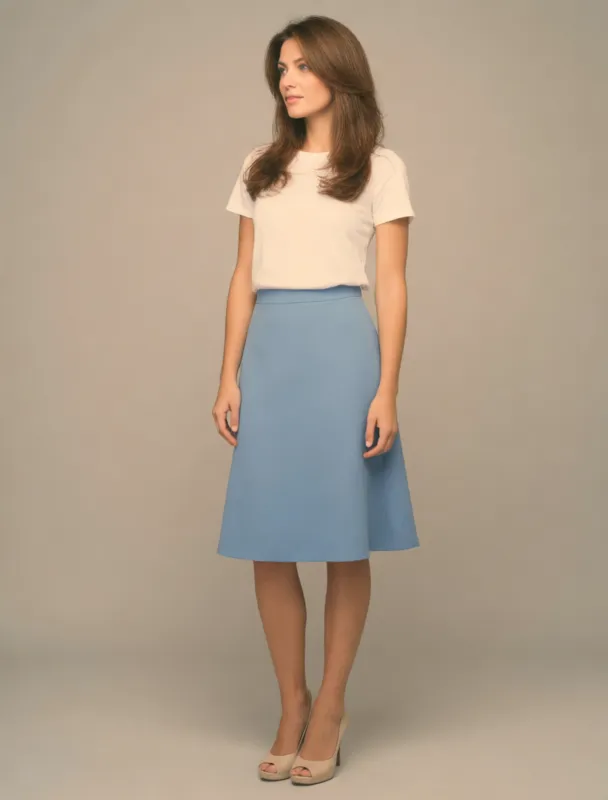
krea 2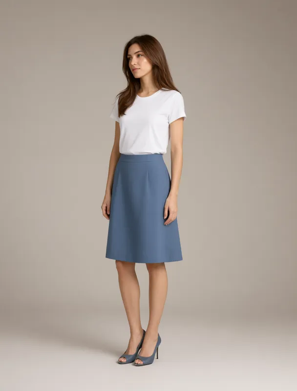
qwen image 2.1a full color full length fashion photograph in three-quarter view, with the whole body in frame from head to feet, lit by soft even studio light against a plain warm gray backdrop. the subject is a slim mixed race woman of about twenty five with light skin. her hair is chestnut brown, long blowout layers. she wears a plain white crew-neck t-shirt tucked in. she wears a plain dusty blue knee-length a-line skirt. she wears peep-toe heels. she stands relaxed, turned three quarters toward the left side of the frame, and gazes off to the left side of the frame, away from the camera.
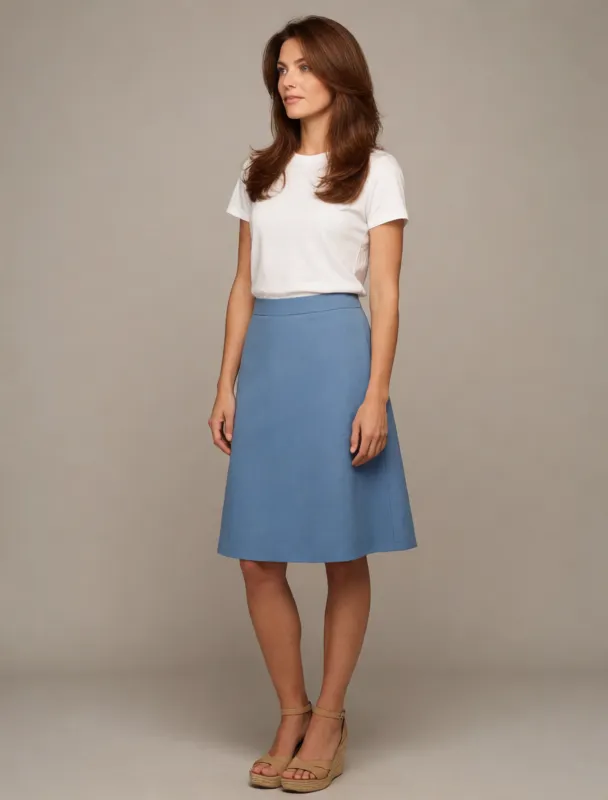
krea 2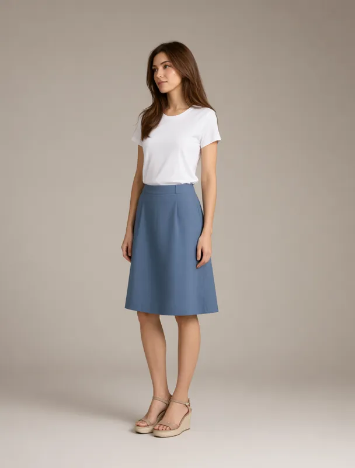
qwen image 2.1a full color full length fashion photograph in three-quarter view, with the whole body in frame from head to feet, lit by soft even studio light against a plain warm gray backdrop. the subject is a slim mixed race woman of about twenty five with light skin. her hair is chestnut brown, long blowout layers. she wears a plain white crew-neck t-shirt tucked in. she wears a plain dusty blue knee-length a-line skirt. she wears wedge sandals. she stands relaxed, turned three quarters toward the left side of the frame, and gazes off to the left side of the frame, away from the camera.
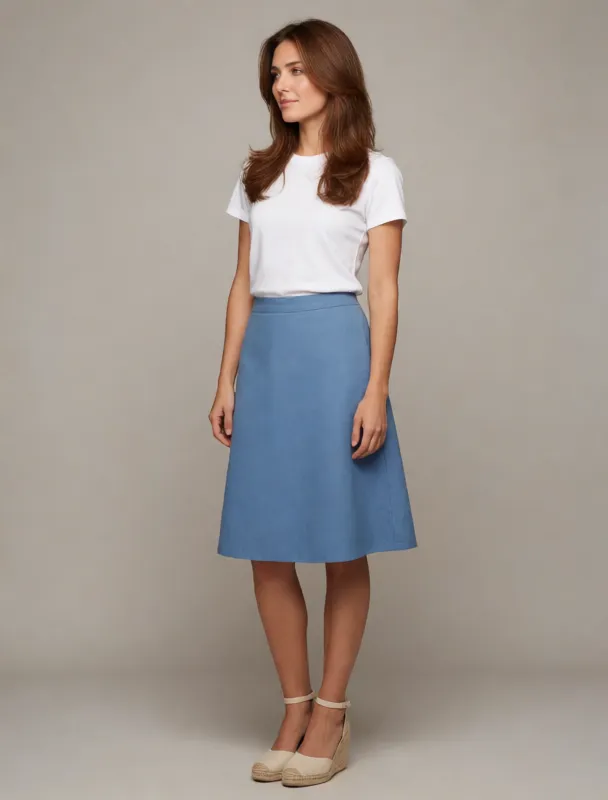
krea 2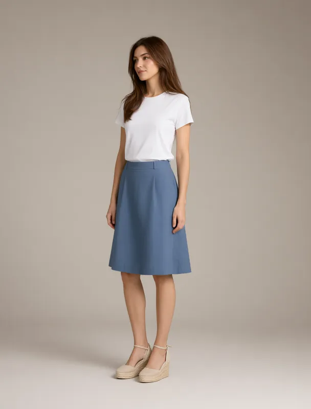
qwen image 2.1a full color full length fashion photograph in three-quarter view, with the whole body in frame from head to feet, lit by soft even studio light against a plain warm gray backdrop. the subject is a slim mixed race woman of about twenty five with light skin. her hair is chestnut brown, long blowout layers. she wears a plain white crew-neck t-shirt tucked in. she wears a plain dusty blue knee-length a-line skirt. she wears espadrille wedges. she stands relaxed, turned three quarters toward the left side of the frame, and gazes off to the left side of the frame, away from the camera.
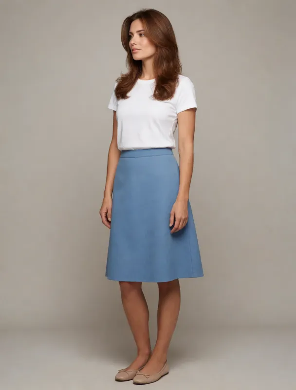
krea 2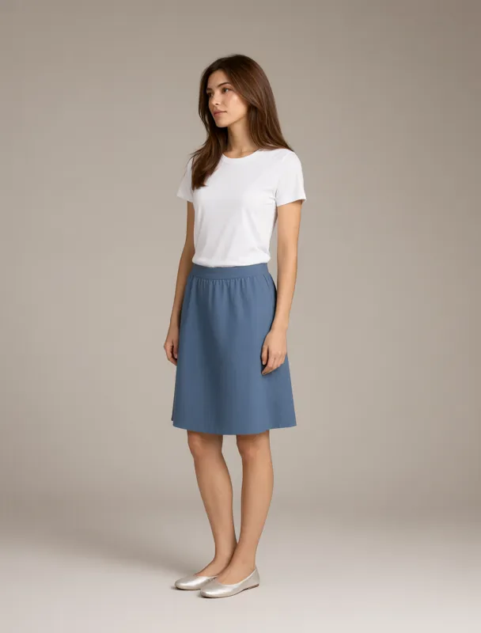
qwen image 2.1a full color full length fashion photograph in three-quarter view, with the whole body in frame from head to feet, lit by soft even studio light against a plain warm gray backdrop. the subject is a slim mixed race woman of about twenty five with light skin. her hair is chestnut brown, long blowout layers. she wears a plain white crew-neck t-shirt tucked in. she wears a plain dusty blue knee-length a-line skirt. she wears ballet flats. she stands relaxed, turned three quarters toward the left side of the frame, and gazes off to the left side of the frame, away from the camera.
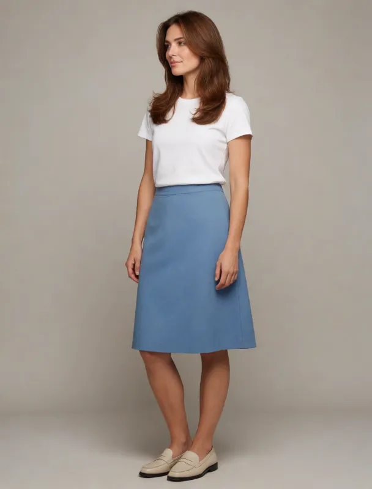
krea 2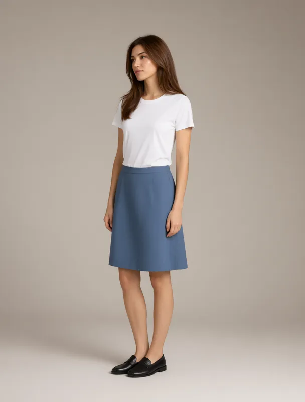
qwen image 2.1a full color full length fashion photograph in three-quarter view, with the whole body in frame from head to feet, lit by soft even studio light against a plain warm gray backdrop. the subject is a slim mixed race woman of about twenty five with light skin. her hair is chestnut brown, long blowout layers. she wears a plain white crew-neck t-shirt tucked in. she wears a plain dusty blue knee-length a-line skirt. she wears penny loafers. she stands relaxed, turned three quarters toward the left side of the frame, and gazes off to the left side of the frame, away from the camera.
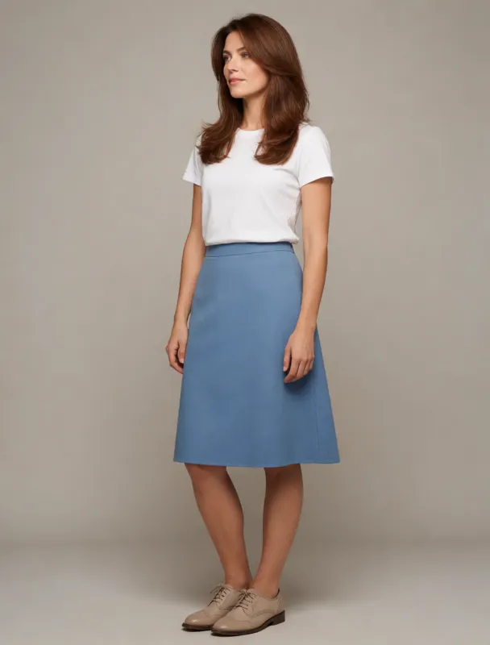
krea 2a full color full length fashion photograph in three-quarter view, with the whole body in frame from head to feet, lit by soft even studio light against a plain warm gray backdrop. the subject is a slim mixed race woman of about twenty five with light skin. her hair is chestnut brown, long blowout layers. she wears a plain white crew-neck t-shirt tucked in. she wears a plain dusty blue knee-length a-line skirt. she wears oxford shoes. she stands relaxed, turned three quarters toward the left side of the frame, and gazes off to the left side of the frame, away from the camera.
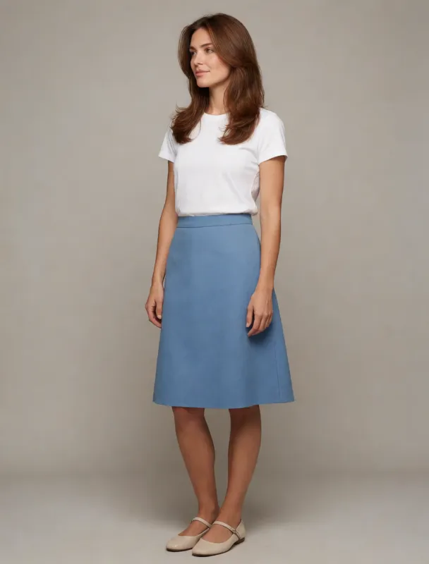
krea 2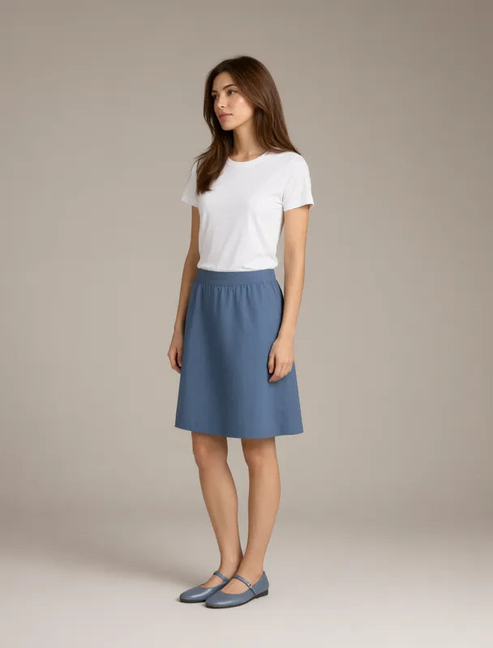
qwen image 2.1a full color full length fashion photograph in three-quarter view, with the whole body in frame from head to feet, lit by soft even studio light against a plain warm gray backdrop. the subject is a slim mixed race woman of about twenty five with light skin. her hair is chestnut brown, long blowout layers. she wears a plain white crew-neck t-shirt tucked in. she wears a plain dusty blue knee-length a-line skirt. she wears mary jane flats. she stands relaxed, turned three quarters toward the left side of the frame, and gazes off to the left side of the frame, away from the camera.
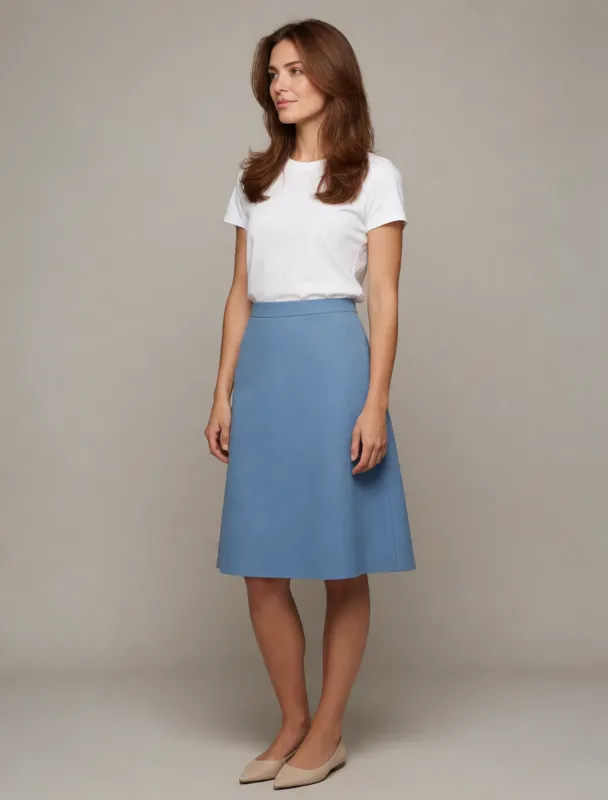
krea 2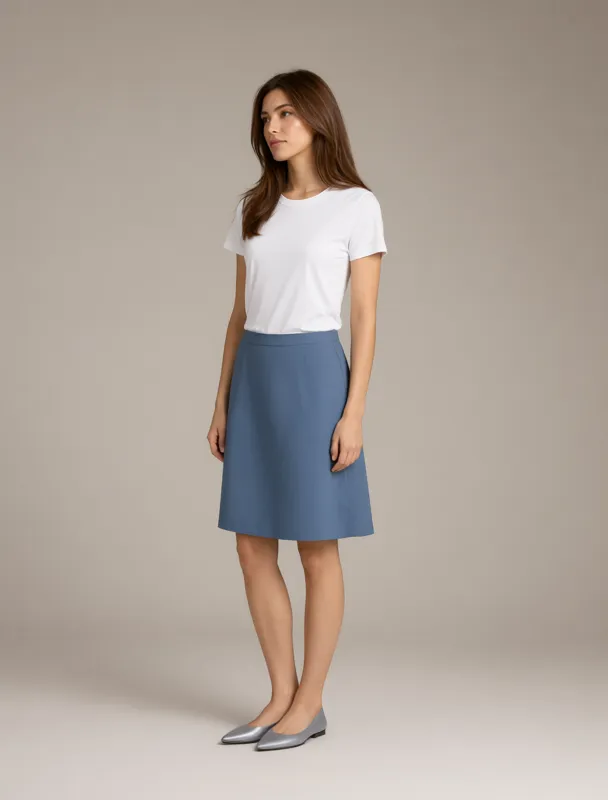
qwen image 2.1a full color full length fashion photograph in three-quarter view, with the whole body in frame from head to feet, lit by soft even studio light against a plain warm gray backdrop. the subject is a slim mixed race woman of about twenty five with light skin. her hair is chestnut brown, long blowout layers. she wears a plain white crew-neck t-shirt tucked in. she wears a plain dusty blue knee-length a-line skirt. she wears pointed-toe flats. she stands relaxed, turned three quarters toward the left side of the frame, and gazes off to the left side of the frame, away from the camera.
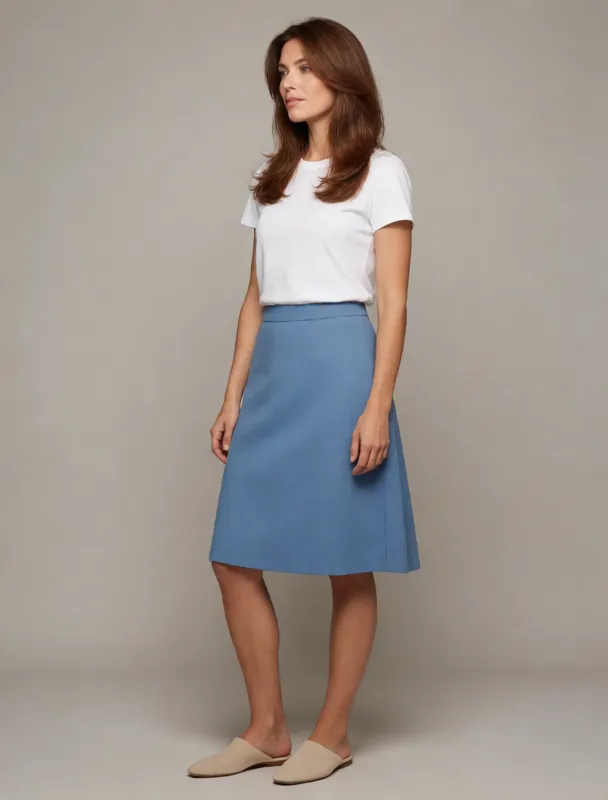
krea 2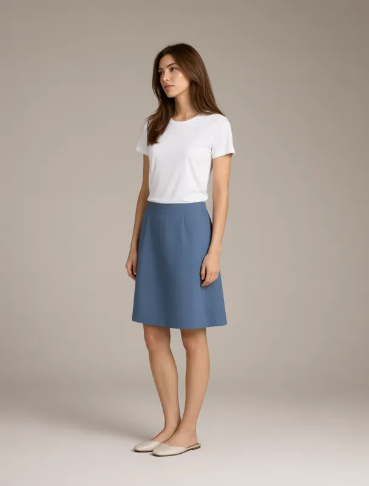
qwen image 2.1a full color full length fashion photograph in three-quarter view, with the whole body in frame from head to feet, lit by soft even studio light against a plain warm gray backdrop. the subject is a slim mixed race woman of about twenty five with light skin. her hair is chestnut brown, long blowout layers. she wears a plain white crew-neck t-shirt tucked in. she wears a plain dusty blue knee-length a-line skirt. she wears flat mules. she stands relaxed, turned three quarters toward the left side of the frame, and gazes off to the left side of the frame, away from the camera.
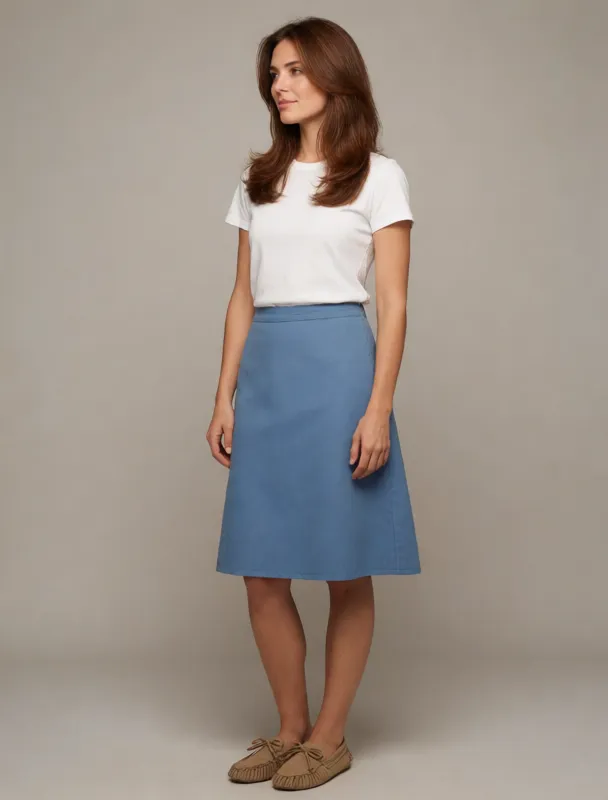
krea 2a full color full length fashion photograph in three-quarter view, with the whole body in frame from head to feet, lit by soft even studio light against a plain warm gray backdrop. the subject is a slim mixed race woman of about twenty five with light skin. her hair is chestnut brown, long blowout layers. she wears a plain white crew-neck t-shirt tucked in. she wears a plain dusty blue knee-length a-line skirt. she wears moccasins. she stands relaxed, turned three quarters toward the left side of the frame, and gazes off to the left side of the frame, away from the camera.
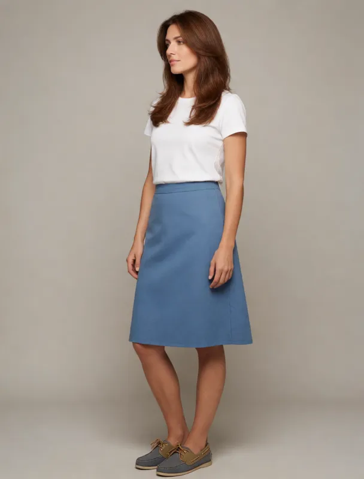
krea 2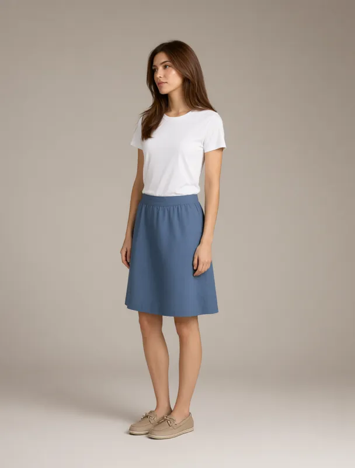
qwen image 2.1a full color full length fashion photograph in three-quarter view, with the whole body in frame from head to feet, lit by soft even studio light against a plain warm gray backdrop. the subject is a slim mixed race woman of about twenty five with light skin. her hair is chestnut brown, long blowout layers. she wears a plain white crew-neck t-shirt tucked in. she wears a plain dusty blue knee-length a-line skirt. she wears boat shoes. she stands relaxed, turned three quarters toward the left side of the frame, and gazes off to the left side of the frame, away from the camera.
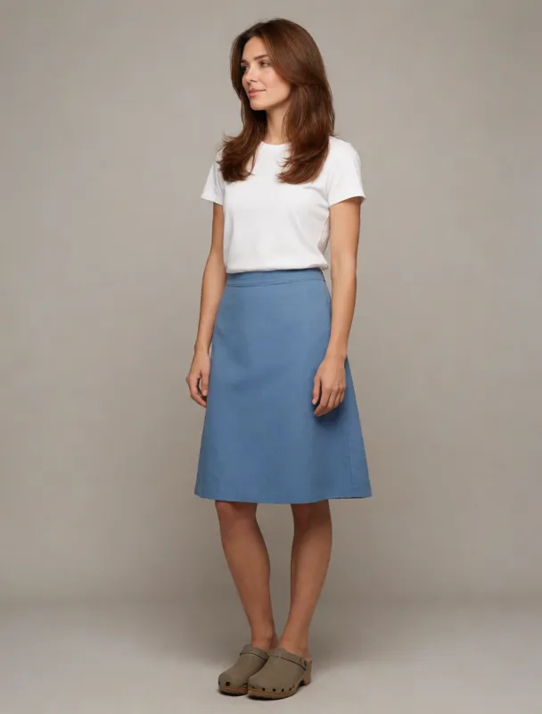
krea 2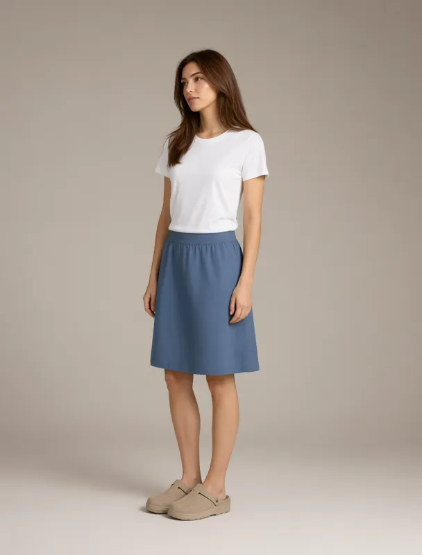
qwen image 2.1a full color full length fashion photograph in three-quarter view, with the whole body in frame from head to feet, lit by soft even studio light against a plain warm gray backdrop. the subject is a slim mixed race woman of about twenty five with light skin. her hair is chestnut brown, long blowout layers. she wears a plain white crew-neck t-shirt tucked in. she wears a plain dusty blue knee-length a-line skirt. she wears clogs. she stands relaxed, turned three quarters toward the left side of the frame, and gazes off to the left side of the frame, away from the camera.
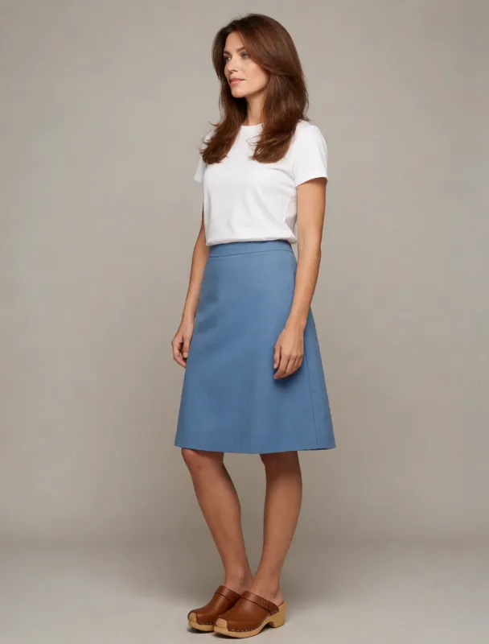
krea 2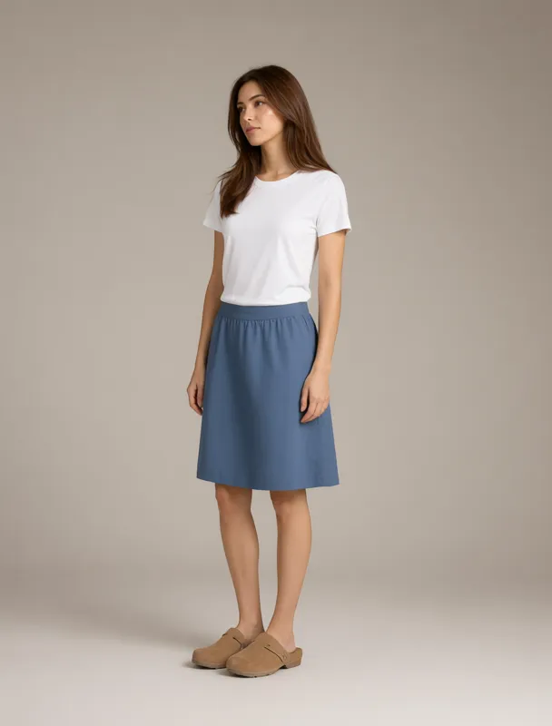
qwen image 2.1a full color full length fashion photograph in three-quarter view, with the whole body in frame from head to feet, lit by soft even studio light against a plain warm gray backdrop. the subject is a slim mixed race woman of about twenty five with light skin. her hair is chestnut brown, long blowout layers. she wears a plain white crew-neck t-shirt tucked in. she wears a plain dusty blue knee-length a-line skirt. she wears wooden clogs. she stands relaxed, turned three quarters toward the left side of the frame, and gazes off to the left side of the frame, away from the camera.
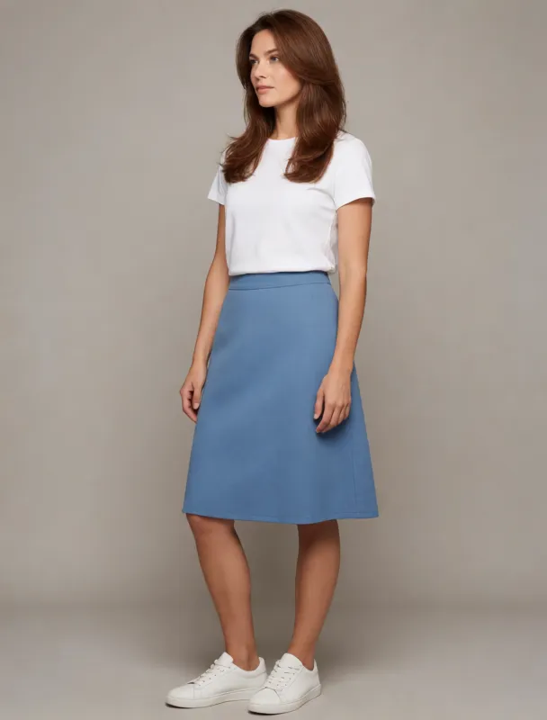
krea 2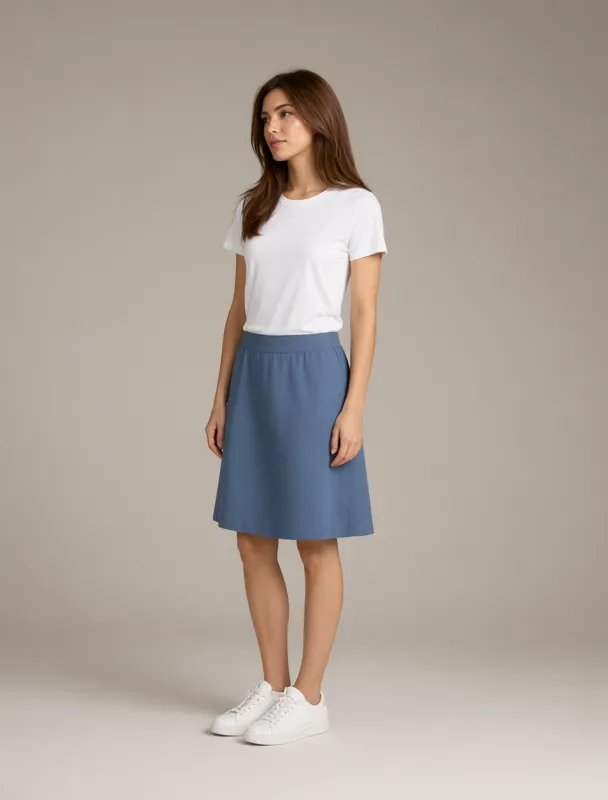
qwen image 2.1a full color full length fashion photograph in three-quarter view, with the whole body in frame from head to feet, lit by soft even studio light against a plain warm gray backdrop. the subject is a slim mixed race woman of about twenty five with light skin. her hair is chestnut brown, long blowout layers. she wears a plain white crew-neck t-shirt tucked in. she wears a plain dusty blue knee-length a-line skirt. she wears white leather sneakers. she stands relaxed, turned three quarters toward the left side of the frame, and gazes off to the left side of the frame, away from the camera.
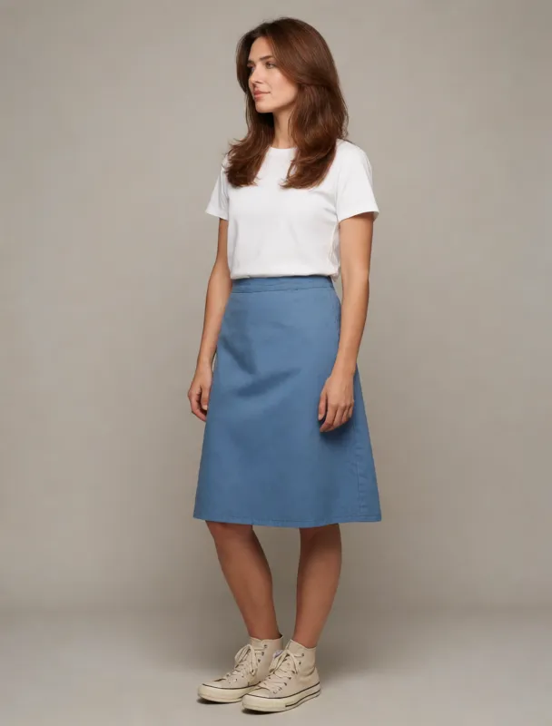
krea 2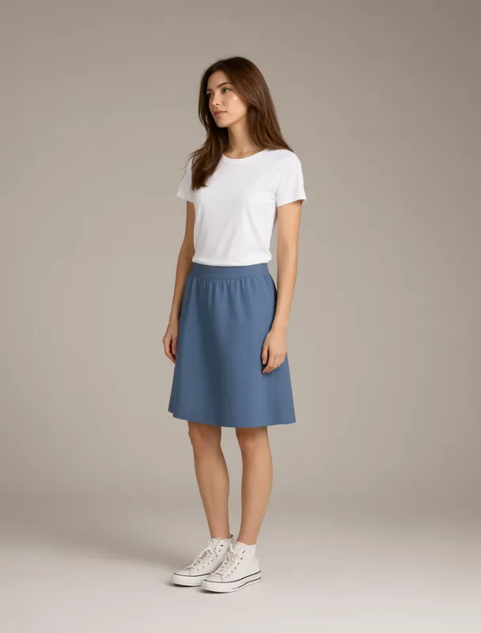
qwen image 2.1a full color full length fashion photograph in three-quarter view, with the whole body in frame from head to feet, lit by soft even studio light against a plain warm gray backdrop. the subject is a slim mixed race woman of about twenty five with light skin. her hair is chestnut brown, long blowout layers. she wears a plain white crew-neck t-shirt tucked in. she wears a plain dusty blue knee-length a-line skirt. she wears canvas high-tops. she stands relaxed, turned three quarters toward the left side of the frame, and gazes off to the left side of the frame, away from the camera.
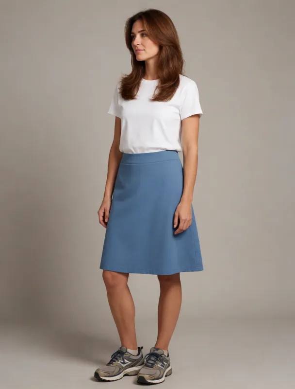
krea 2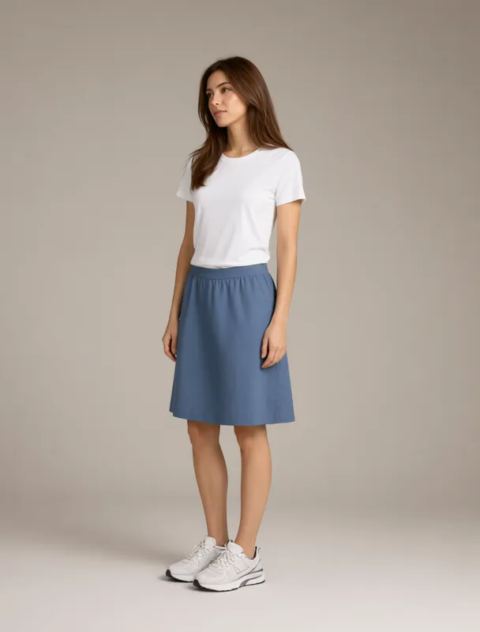
qwen image 2.1a full color full length fashion photograph in three-quarter view, with the whole body in frame from head to feet, lit by soft even studio light against a plain warm gray backdrop. the subject is a slim mixed race woman of about twenty five with light skin. her hair is chestnut brown, long blowout layers. she wears a plain white crew-neck t-shirt tucked in. she wears a plain dusty blue knee-length a-line skirt. she wears running shoes. she stands relaxed, turned three quarters toward the left side of the frame, and gazes off to the left side of the frame, away from the camera.
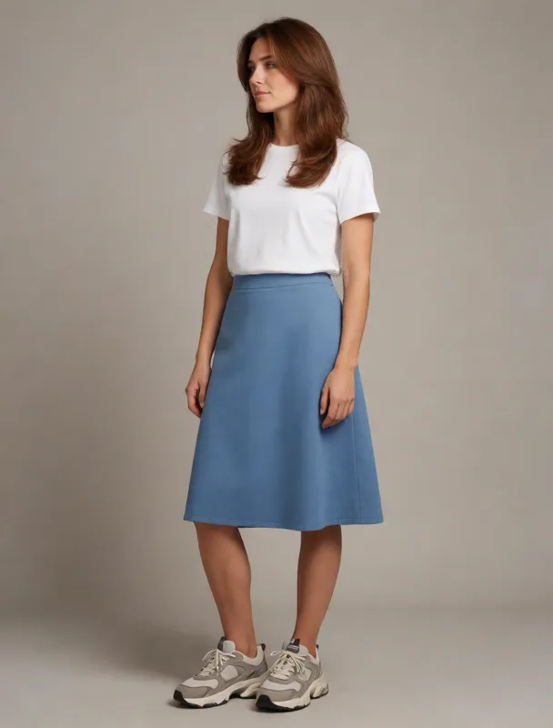
krea 2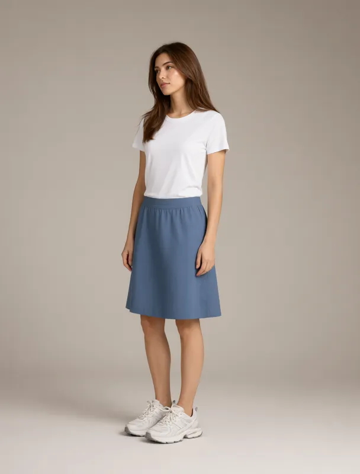
qwen image 2.1a full color full length fashion photograph in three-quarter view, with the whole body in frame from head to feet, lit by soft even studio light against a plain warm gray backdrop. the subject is a slim mixed race woman of about twenty five with light skin. her hair is chestnut brown, long blowout layers. she wears a plain white crew-neck t-shirt tucked in. she wears a plain dusty blue knee-length a-line skirt. she wears chunky dad sneakers. she stands relaxed, turned three quarters toward the left side of the frame, and gazes off to the left side of the frame, away from the camera.
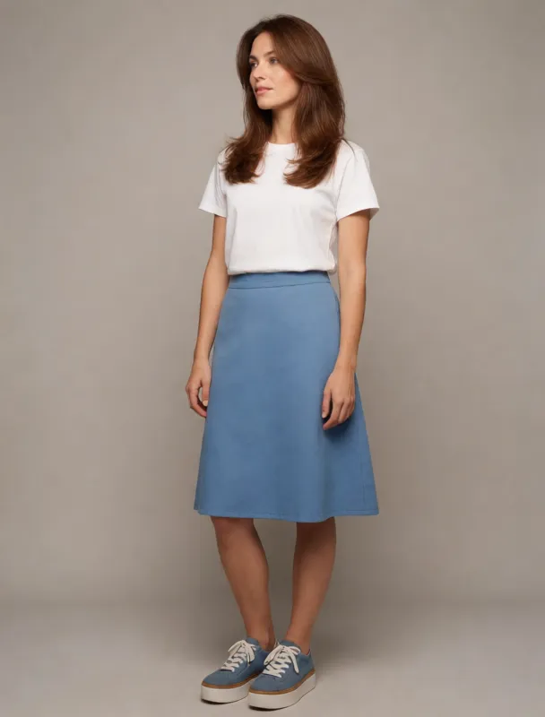
krea 2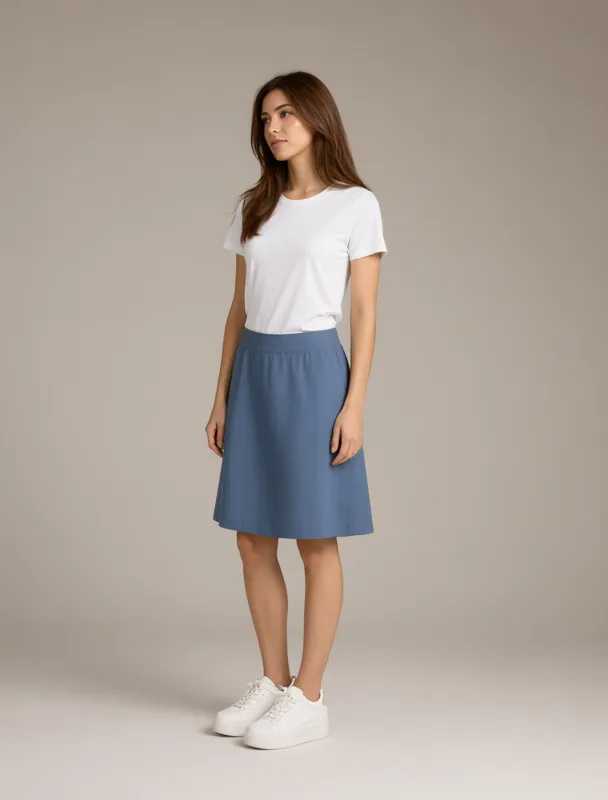
qwen image 2.1a full color full length fashion photograph in three-quarter view, with the whole body in frame from head to feet, lit by soft even studio light against a plain warm gray backdrop. the subject is a slim mixed race woman of about twenty five with light skin. her hair is chestnut brown, long blowout layers. she wears a plain white crew-neck t-shirt tucked in. she wears a plain dusty blue knee-length a-line skirt. she wears platform sneakers. she stands relaxed, turned three quarters toward the left side of the frame, and gazes off to the left side of the frame, away from the camera.
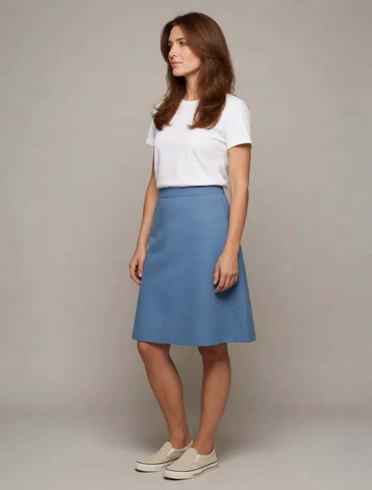
krea 2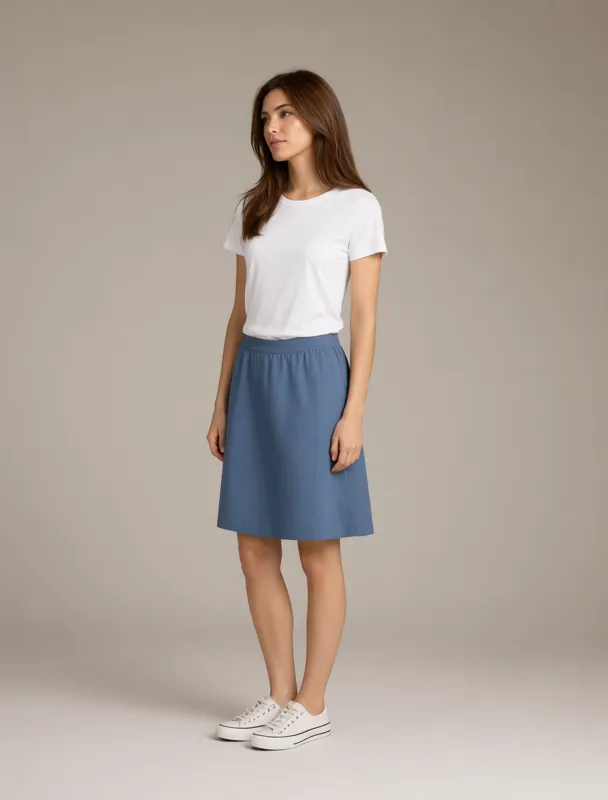
qwen image 2.1a full color full length fashion photograph in three-quarter view, with the whole body in frame from head to feet, lit by soft even studio light against a plain warm gray backdrop. the subject is a slim mixed race woman of about twenty five with light skin. her hair is chestnut brown, long blowout layers. she wears a plain white crew-neck t-shirt tucked in. she wears a plain dusty blue knee-length a-line skirt. she wears slip-on canvas sneakers. she stands relaxed, turned three quarters toward the left side of the frame, and gazes off to the left side of the frame, away from the camera.
a full color full length fashion photograph in three-quarter view, with the whole body in frame from head to feet, lit by soft even studio light against a plain warm gray backdrop. the subject is a slim mixed race woman of about twenty five with light skin. her hair is chestnut brown, long blowout layers. she wears a plain white crew-neck t-shirt tucked in. she wears a plain dusty blue knee-length a-line skirt. she wears ankle boots. she stands relaxed, turned three quarters toward the left side of the frame, and gazes off to the left side of the frame, away from the camera.
a full color full length fashion photograph in three-quarter view, with the whole body in frame from head to feet, lit by soft even studio light against a plain warm gray backdrop. the subject is a slim mixed race woman of about twenty five with light skin. her hair is chestnut brown, long blowout layers. she wears a plain white crew-neck t-shirt tucked in. she wears a plain dusty blue knee-length a-line skirt. she wears chelsea boots. she stands relaxed, turned three quarters toward the left side of the frame, and gazes off to the left side of the frame, away from the camera.
a full color full length fashion photograph in three-quarter view, with the whole body in frame from head to feet, lit by soft even studio light against a plain warm gray backdrop. the subject is a slim mixed race woman of about twenty five with light skin. her hair is chestnut brown, long blowout layers. she wears a plain white crew-neck t-shirt tucked in. she wears a plain dusty blue knee-length a-line skirt. she wears combat boots. she stands relaxed, turned three quarters toward the left side of the frame, and gazes off to the left side of the frame, away from the camera.
a full color full length fashion photograph in three-quarter view, with the whole body in frame from head to feet, lit by soft even studio light against a plain warm gray backdrop. the subject is a slim mixed race woman of about twenty five with light skin. her hair is chestnut brown, long blowout layers. she wears a plain white crew-neck t-shirt tucked in. she wears a plain dusty blue knee-length a-line skirt. she wears cowboy boots. she stands relaxed, turned three quarters toward the left side of the frame, and gazes off to the left side of the frame, away from the camera.
a full color full length fashion photograph in three-quarter view, with the whole body in frame from head to feet, lit by soft even studio light against a plain warm gray backdrop. the subject is a slim mixed race woman of about twenty five with light skin. her hair is chestnut brown, long blowout layers. she wears a plain white crew-neck t-shirt tucked in. she wears a plain dusty blue knee-length a-line skirt. she wears knee-high boots. she stands relaxed, turned three quarters toward the left side of the frame, and gazes off to the left side of the frame, away from the camera.
a full color full length fashion photograph in three-quarter view, with the whole body in frame from head to feet, lit by soft even studio light against a plain warm gray backdrop. the subject is a slim mixed race woman of about twenty five with light skin. her hair is chestnut brown, long blowout layers. she wears a plain white crew-neck t-shirt tucked in. she wears a plain dusty blue knee-length a-line skirt. she wears thigh-high boots. she stands relaxed, turned three quarters toward the left side of the frame, and gazes off to the left side of the frame, away from the camera.
a full color full length fashion photograph in three-quarter view, with the whole body in frame from head to feet, lit by soft even studio light against a plain warm gray backdrop. the subject is a slim mixed race woman of about twenty five with light skin. her hair is chestnut brown, long blowout layers. she wears a plain white crew-neck t-shirt tucked in. she wears a plain dusty blue knee-length a-line skirt. she wears riding boots. she stands relaxed, turned three quarters toward the left side of the frame, and gazes off to the left side of the frame, away from the camera.
a full color full length fashion photograph in three-quarter view, with the whole body in frame from head to feet, lit by soft even studio light against a plain warm gray backdrop. the subject is a slim mixed race woman of about twenty five with light skin. her hair is chestnut brown, long blowout layers. she wears a plain white crew-neck t-shirt tucked in. she wears a plain dusty blue knee-length a-line skirt. she wears hiking boots. she stands relaxed, turned three quarters toward the left side of the frame, and gazes off to the left side of the frame, away from the camera.
a full color full length fashion photograph in three-quarter view, with the whole body in frame from head to feet, lit by soft even studio light against a plain warm gray backdrop. the subject is a slim mixed race woman of about twenty five with light skin. her hair is chestnut brown, long blowout layers. she wears a plain white crew-neck t-shirt tucked in. she wears a plain dusty blue knee-length a-line skirt. she wears rain boots. she stands relaxed, turned three quarters toward the left side of the frame, and gazes off to the left side of the frame, away from the camera.
a full color full length fashion photograph in three-quarter view, with the whole body in frame from head to feet, lit by soft even studio light against a plain warm gray backdrop. the subject is a slim mixed race woman of about twenty five with light skin. her hair is chestnut brown, long blowout layers. she wears a plain white crew-neck t-shirt tucked in. she wears a plain dusty blue knee-length a-line skirt. she wears platform boots. she stands relaxed, turned three quarters toward the left side of the frame, and gazes off to the left side of the frame, away from the camera.
a full color full length fashion photograph in three-quarter view, with the whole body in frame from head to feet, lit by soft even studio light against a plain warm gray backdrop. the subject is a slim mixed race woman of about twenty five with light skin. her hair is chestnut brown, long blowout layers. she wears a plain white crew-neck t-shirt tucked in. she wears a plain dusty blue knee-length a-line skirt. she wears sock boots. she stands relaxed, turned three quarters toward the left side of the frame, and gazes off to the left side of the frame, away from the camera.
a full color full length fashion photograph in three-quarter view, with the whole body in frame from head to feet, lit by soft even studio light against a plain warm gray backdrop. the subject is a slim mixed race woman of about twenty five with light skin. her hair is chestnut brown, long blowout layers. she wears a plain white crew-neck t-shirt tucked in. she wears a plain dusty blue knee-length a-line skirt. she wears shearling-lined suede boots. she stands relaxed, turned three quarters toward the left side of the frame, and gazes off to the left side of the frame, away from the camera.
a full color full length fashion photograph in three-quarter view, with the whole body in frame from head to feet, lit by soft even studio light against a plain warm gray backdrop. the subject is a slim mixed race woman of about twenty five with light skin. her hair is chestnut brown, long blowout layers. she wears a plain white crew-neck t-shirt tucked in. she wears a plain dusty blue knee-length a-line skirt. she wears flip-flops. she stands relaxed, turned three quarters toward the left side of the frame, and gazes off to the left side of the frame, away from the camera.
a full color full length fashion photograph in three-quarter view, with the whole body in frame from head to feet, lit by soft even studio light against a plain warm gray backdrop. the subject is a slim mixed race woman of about twenty five with light skin. her hair is chestnut brown, long blowout layers. she wears a plain white crew-neck t-shirt tucked in. she wears a plain dusty blue knee-length a-line skirt. she wears slide sandals. she stands relaxed, turned three quarters toward the left side of the frame, and gazes off to the left side of the frame, away from the camera.
a full color full length fashion photograph in three-quarter view, with the whole body in frame from head to feet, lit by soft even studio light against a plain warm gray backdrop. the subject is a slim mixed race woman of about twenty five with light skin. her hair is chestnut brown, long blowout layers. she wears a plain white crew-neck t-shirt tucked in. she wears a plain dusty blue knee-length a-line skirt. she wears gladiator sandals. she stands relaxed, turned three quarters toward the left side of the frame, and gazes off to the left side of the frame, away from the camera.
a full color full length fashion photograph in three-quarter view, with the whole body in frame from head to feet, lit by soft even studio light against a plain warm gray backdrop. the subject is a slim mixed race woman of about twenty five with light skin. her hair is chestnut brown, long blowout layers. she wears a plain white crew-neck t-shirt tucked in. she wears a plain dusty blue knee-length a-line skirt. she wears strappy flat sandals. she stands relaxed, turned three quarters toward the left side of the frame, and gazes off to the left side of the frame, away from the camera.
a full color full length fashion photograph in three-quarter view, with the whole body in frame from head to feet, lit by soft even studio light against a plain warm gray backdrop. the subject is a slim mixed race woman of about twenty five with light skin. her hair is chestnut brown, long blowout layers. she wears a plain white crew-neck t-shirt tucked in. she wears a plain dusty blue knee-length a-line skirt. she wears sport sandals. she stands relaxed, turned three quarters toward the left side of the frame, and gazes off to the left side of the frame, away from the camera.